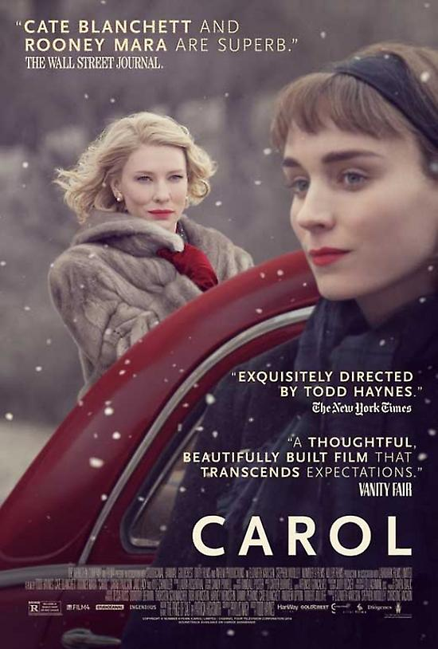

My favorite movie
Carol: "Carol," directed by Todd Haynes, is a beautifully crafted romance set in the conservative 1950s. It tells the story of a forbidden love between two women, Carol and Therese, played by Cate Blanchett and Rooney Mara. The film explores themes of identity, desire, and societal norms with delicate emotion and visual elegance. With its rich cinematography and nuanced performances, "Carol" captures the intense longing and quiet struggles of pursuing love in a time when such relationships were stigmatized. Its subtle yet powerful storytelling invites viewers into an intimate portrayal of love that defies the expectations of its era.